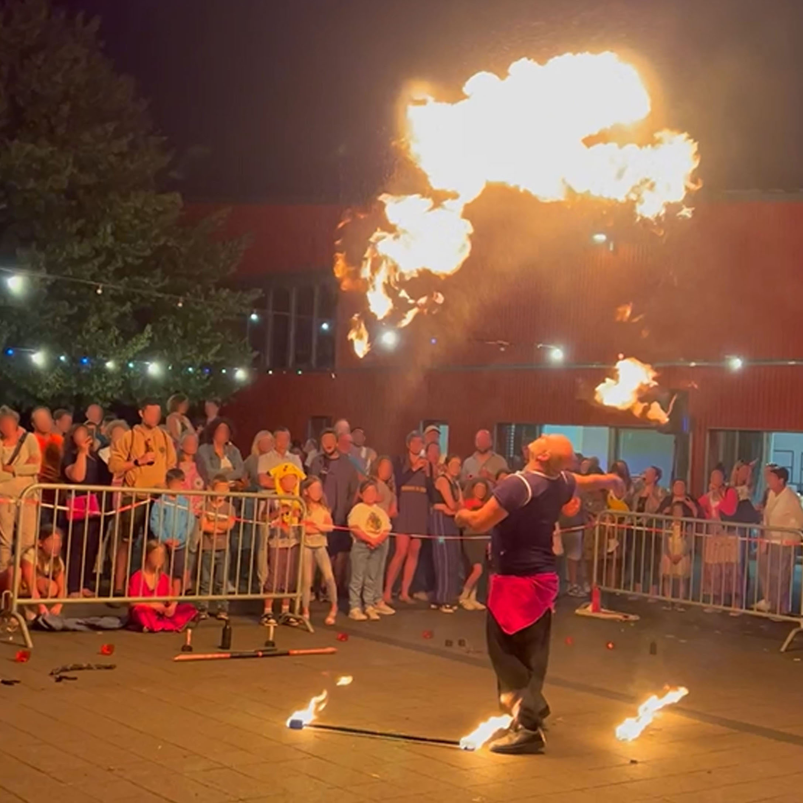
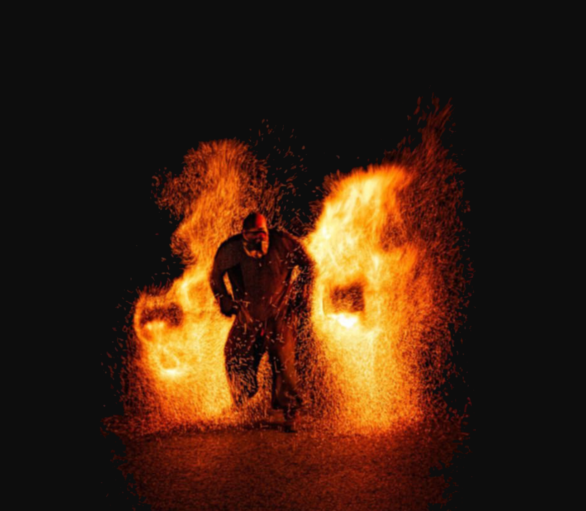
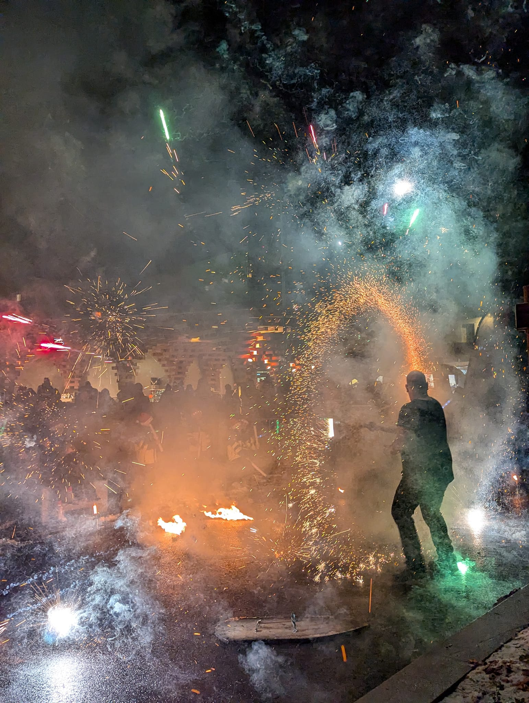

Jonglage enflammé
Une démonstration technique mêlant différents agrès
et figures de jonglage avec le feu.
Un spectacle de feu visuel et dynamique, axé sur la démonstration technique et la performance. Jonglage enflammé et effets pyrotechniques s’enchaînent au rythme d’une bande-son où se succèdent dynamisme, nostalgie et festivité. Les différentes ambiances musicales accompagnent les changements de rythme et d’intensité de la performance, pour créer un spectacle vivant, rythmé et plein de contraste.
Le spectacle privilégie l’impact visuel, le rythme et l’ambiance, avec notamment des effets de braises incandescentes, des effets pyrotechniques et un final explosif.

Jonglage de feu
Braises incandescentes
Effets pyrotechniques
Une démonstration technique mêlant différents agrès
et figures de jonglage avec le feu.
Des effets de braises et d’étincelles viennent renforcer
l’impact visuel de la performance.
Des effets pyrotechniques ponctuent le spectacle
et accompagnent les moments forts de la chorégraphie.
Un final explosif accompagné d’un petit feu d’artifice pour conclure la représentation.
Ce spectacle est particulièrement adapté aux événements recherchant une ambiance dynamique et spectaculaire.
Une performance visuelle capable de marquer les temps forts d'un événement.
Une animation originale pour soirées, séminaires et événements professionnels.
Un spectacle marquant pour créer un moment fort au cours de la réception.
Un spectacle particulièrement adapté aux soirées et événements en extérieur.
Une animation fédératrice et spectaculaire, idéale pour les fêtes de village, célébrations locales et événements en plein air.
Environ 30 minutes.
Spectacle de feu, jonglage enflammé et effets pyrotechniques.
Tout public, particulièrement adapté aux événements festifs et aux grandes célébrations en extérieur.
Vous souhaitez programmer ce spectacle?
Contactez-moi pour me présenter votre événement et connaître
les possibilités d’accueil du spectacle.
Réponse personnalisée et devis gratuit.